K562 Activating DNase matched - State 1:Tss (n=82)
K562 Activating DNase matched - State 1:Tss (n=82)
[
See group descriptions
]
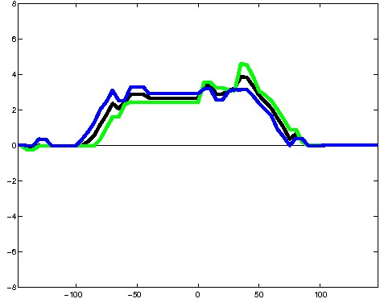
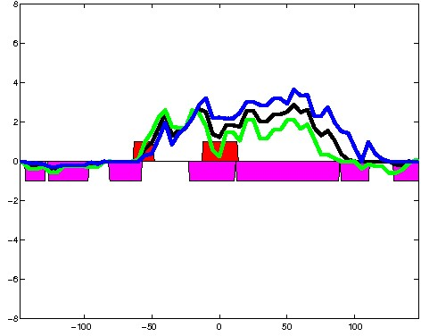
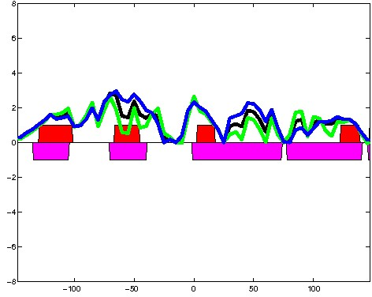
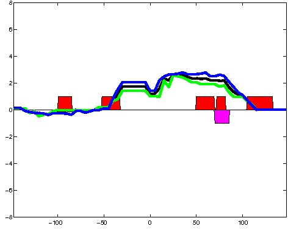
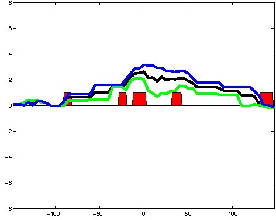
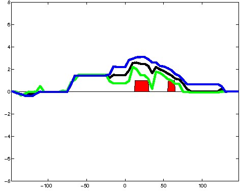
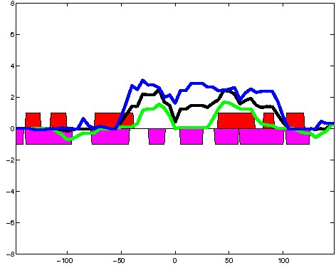
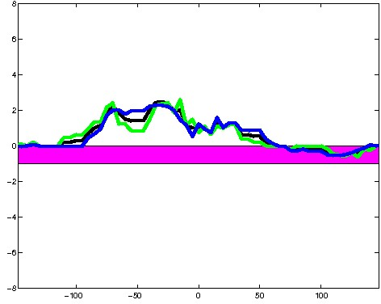
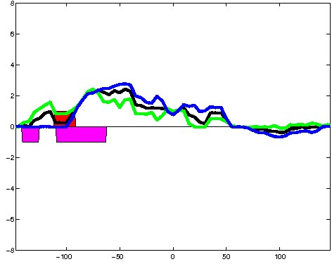
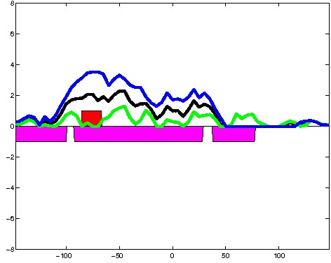
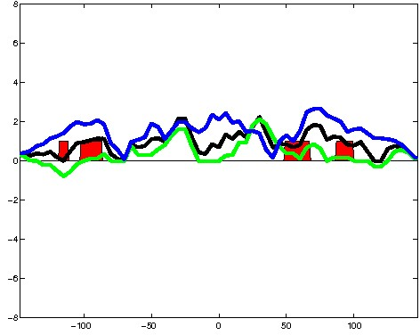
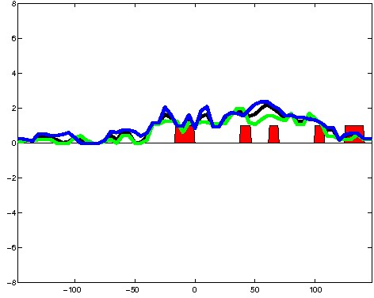
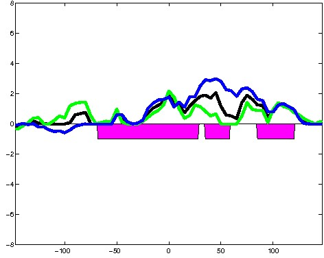
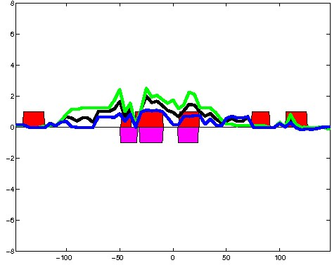
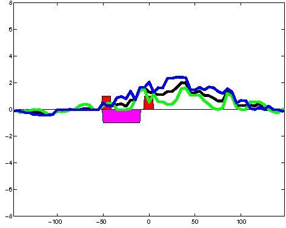
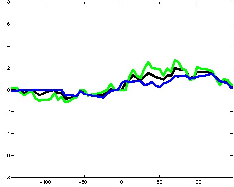
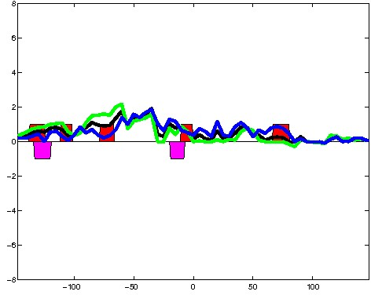
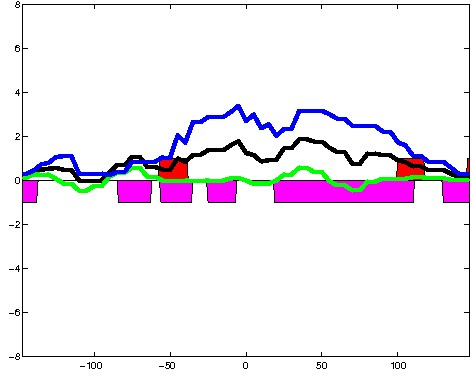
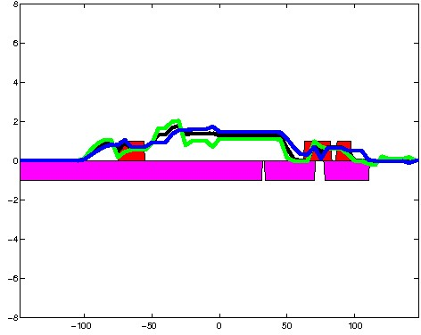
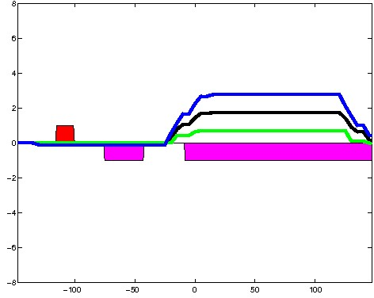
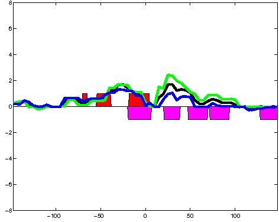
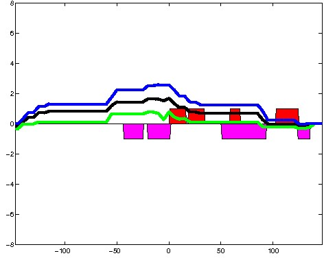
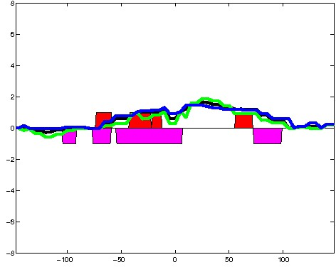
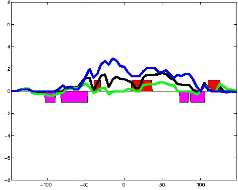
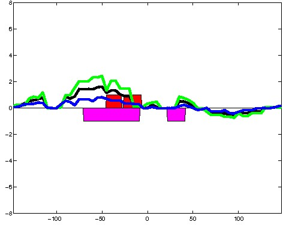
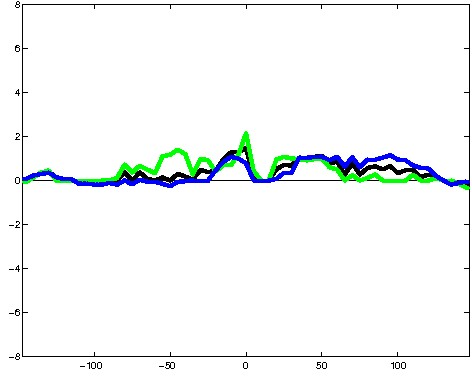
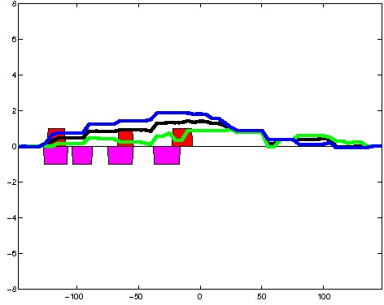
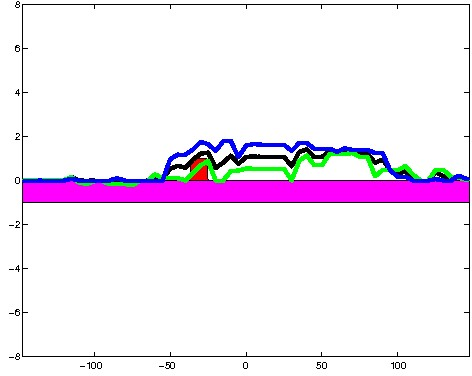
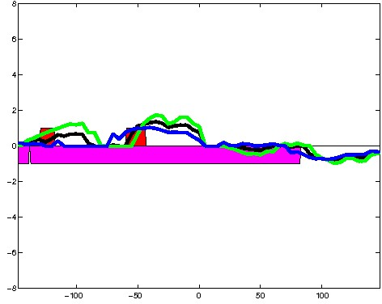
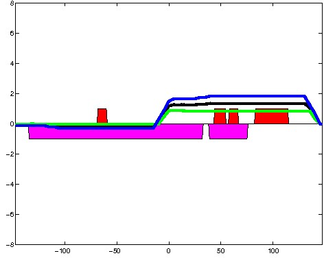
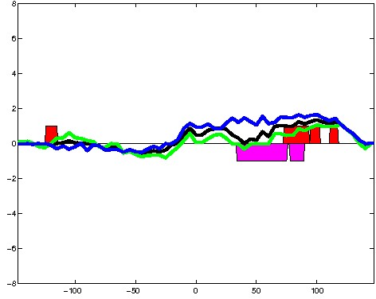
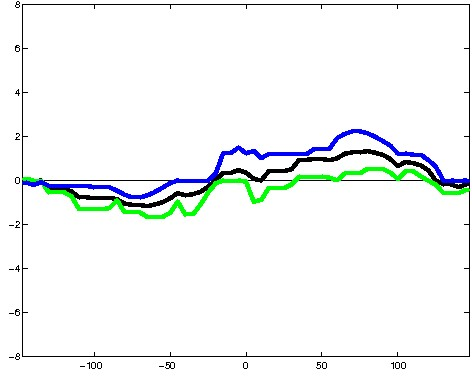
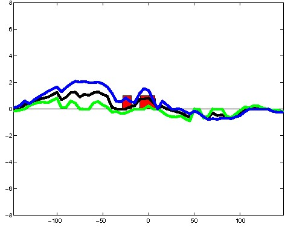
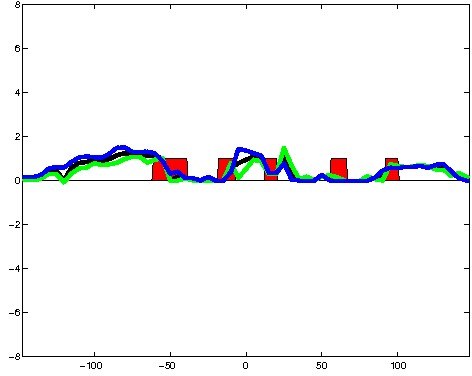
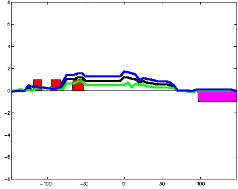
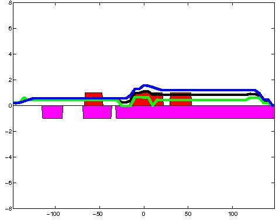
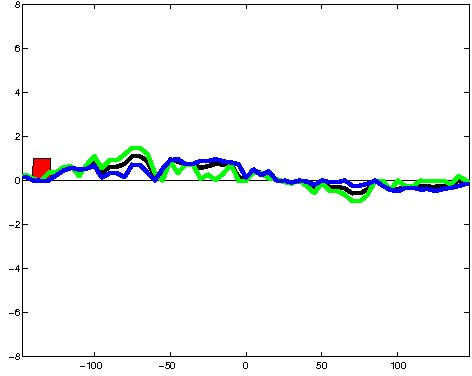
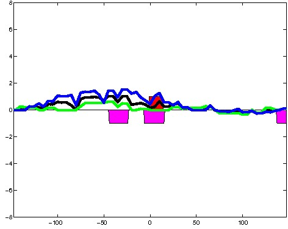
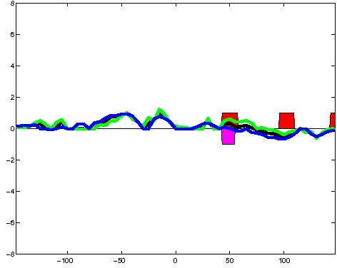
; picked in K562 (state 1:Tss, DNase); matched; chr4:39,460,489-39,460,783 (295bp)")
; picked in K562 (state 1:Tss, DNase); matched; chr12:120,884,089-120,884,383 (295bp)")
; picked in K562 (state 1:Tss, DNase); matched; chr9:136,214,869-136,215,163 (295bp)")
; picked in K562 (state 1:Tss, DNase); matched; chr12:498,649-498,943 (295bp)")
; picked in K562 (state 1:Tss, DNase); matched; chr12:48,099,749-48,100,043 (295bp)")
; picked in K562 (state 1:Tss, DNase); matched; chr10:102,820,389-102,820,683 (295bp)")
; picked in K562 (state 1:Tss, DNase); matched; chrX:119,694,769-119,695,063 (295bp)")
; picked in K562 (state 1:Tss, DNase); matched; chr14:30,766,129-30,766,423 (295bp)")
; picked in K562 (state 1:Tss, DNase); matched; chr1:11,986,409-11,986,703 (295bp)")
; picked in K562 (state 1:Tss, DNase); matched; chr19:37,663,529-37,663,823 (295bp)")
; picked in K562 (state 1:Tss, DNase); matched; chr5:179,050,669-179,050,963 (295bp)")
; picked in K562 (state 1:Tss, DNase); matched; chr11:8,710,409-8,710,703 (295bp)")
; picked in K562 (state 1:Tss, DNase); matched; chr17:73,043,009-73,043,303 (295bp)")
; picked in K562 (state 1:Tss, DNase); matched; chrX:70,401,889-70,402,183 (295bp)")
; picked in K562 (state 1:Tss, DNase); matched; chr14:23,504,289-23,504,583 (295bp)")
; picked in K562 (state 1:Tss, DNase); matched; chr9:124,921,969-124,922,263 (295bp)")
; picked in K562 (state 1:Tss, DNase); matched; chr17:7,760,789-7,761,083 (295bp)")
; picked in K562 (state 1:Tss, DNase); matched; chr19:19,314,129-19,314,423 (295bp)")
; picked in K562 (state 1:Tss, DNase); matched; chr1:247,267,609-247,267,903 (295bp)")
; picked in K562 (state 1:Tss, DNase); matched; chr16:89,882,989-89,883,283 (295bp)")
; picked in K562 (state 1:Tss, DNase); matched; chr1:39,325,369-39,325,663 (295bp)")
; picked in K562 (state 1:Tss, DNase); matched; chr16:31,884,949-31,885,243 (295bp)")
; picked in K562 (state 1:Tss, DNase); matched; chr11:64,885,129-64,885,423 (295bp)")
; picked in K562 (state 1:Tss, DNase); matched; chr12:49,524,009-49,524,303 (295bp)")
; picked in K562 (state 1:Tss, DNase); matched; chr7:72,298,749-72,299,043 (295bp)")
; picked in K562 (state 1:Tss, DNase); matched; chr4:4,543,649-4,543,943 (295bp)") 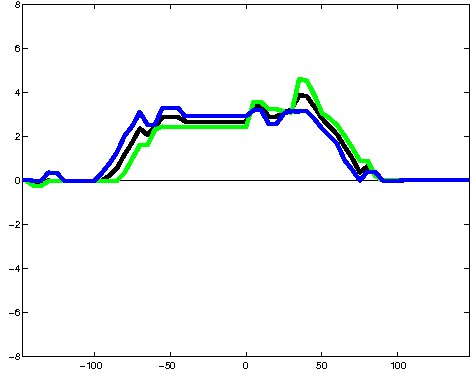
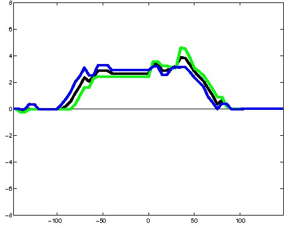
; picked in K562 (state 1:Tss, DNase); matched; chr14:96,829,549-96,829,843 (295bp)")
; picked in K562 (state 1:Tss, DNase); matched; chr1:28,879,309-28,879,603 (295bp)")
; picked in K562 (state 1:Tss, DNase); matched; chr11:59,436,549-59,436,843 (295bp)")
; picked in K562 (state 1:Tss, DNase); matched; chrX:23,685,369-23,685,663 (295bp)")
; picked in K562 (state 1:Tss, DNase); matched; chr9:96,215,769-96,216,063 (295bp)")
; picked in K562 (state 1:Tss, DNase); matched; chr15:23,096,749-23,097,043 (295bp)")
; picked in K562 (state 1:Tss, DNase); matched; chr11:64,794,729-64,795,023 (295bp)")
; picked in K562 (state 1:Tss, DNase); matched; chr1:54,355,409-54,355,703 (295bp)")
; picked in K562 (state 1:Tss, DNase); matched; chr13:28,713,429-28,713,723 (295bp)") 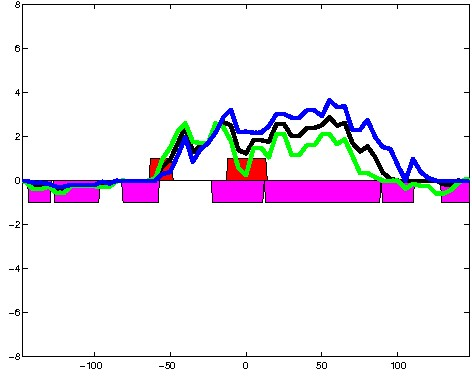
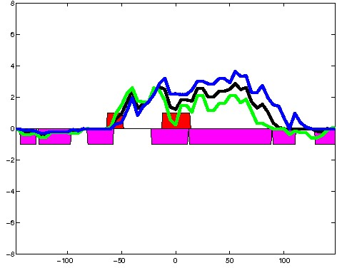
; picked in K562 (state 1:Tss, DNase); matched; chr9:139,267,989-139,268,283 (295bp)") 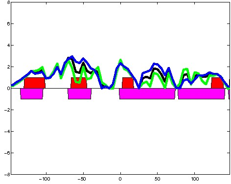
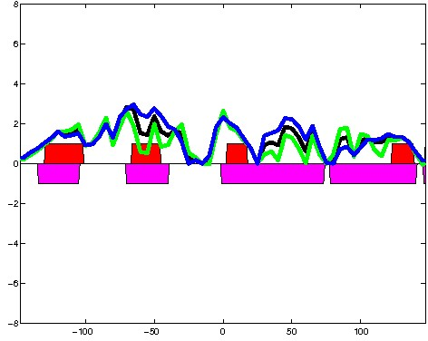
; picked in K562 (state 1:Tss, DNase); matched; chr2:47,195,089-47,195,383 (295bp)") 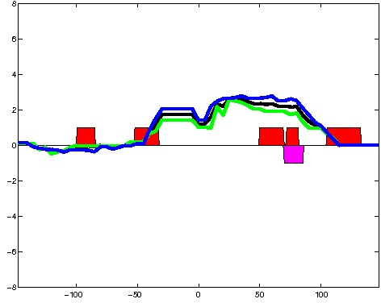
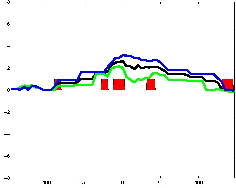
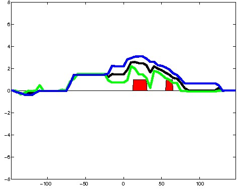
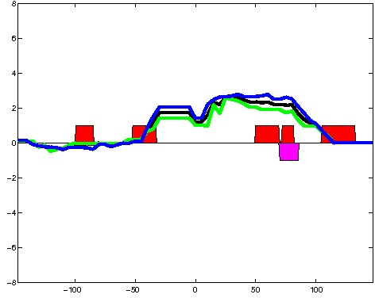
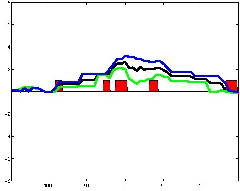

; picked in K562 (state 1:Tss, DNase); matched; chr7:5,601,589-5,601,883 (295bp)") 


; picked in K562 (state 1:Tss, DNase); matched; chr7:4,721,629-4,721,923 (295bp)") 


; picked in K562 (state 1:Tss, DNase); matched; chr17:26,368,149-26,368,443 (295bp)") 


; picked in K562 (state 1:Tss, DNase); matched; chr19:5,803,969-5,804,263 (295bp)")
; picked in K562 (state 1:Tss, DNase); matched; chr16:28,874,589-28,874,883 (295bp)") 


; picked in K562 (state 1:Tss, DNase); matched; chr5:137,514,269-137,514,563 (295bp)") 


